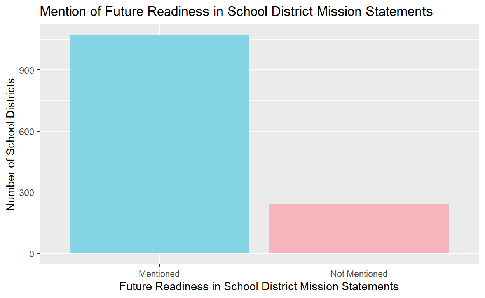
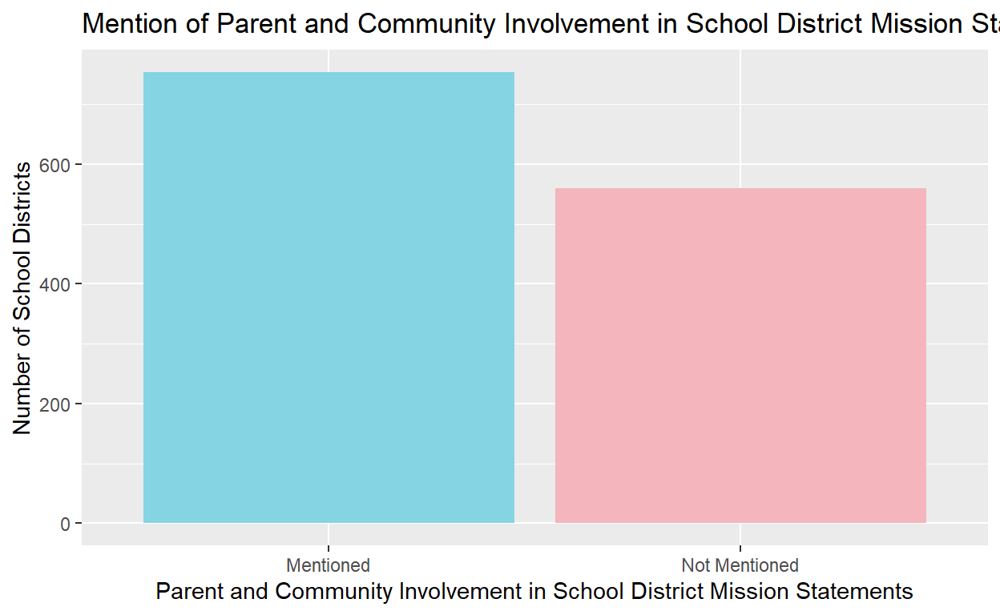

An analysis on the effect of neighborhood income on the focus of the local school district through inspecting school district mission statements
library(tidyverse)
library(wesanderson)
statement <- read.csv("district_tabular_data.csv")Though the United States offers free public education, the quality of education varies across different states, counties, and even neighborhoods. One of the greatest determinants of the quality of a public school and the resources it can provide is the median income of the area it is located in. This project aims to understand how neighborhood income affects the focus of the school district by looking at their mission statements, especially a school’s attention toward future readiness, developing academic skills, and parent and community involvement. Since higher-income schools have more resources and tend to send more students to elite colleges and universities, I hypothesize that school districts located in higher-income neighborhoods are more focused on future readiness, developing academic skills, and parent and community involvement than schools located in middle-income and low-income neighborhoods. Furthermore, high-income parents tend to have more time to invest in their children’s education, which also influenced my hypothesis. If it is observed that these topics are mentioned more often in the mission statement of schools in high-income neighborhoods, there is support for my hypothesis. However, my hypothesis would be disproved if there is no relationship between income level and mention of those topics in the school district mission statements or if the topics are mentioned more by schools located in middle or low-income neighborhoods. Through this project, we will gain a better understanding on how income can affect the quality of schooling one gets in the United States.
The dataset I am using from the Pew Research Center for this project consists of 1314 school districts across the United States and includes variables such as the geographical location, political affiliation, and income level of the neighborhood the school district is located in. Along with those demographic variables, the dataset also tracks whether the school district mission statement mentions certain topics, such as having a safe and healthy environment, the academic programs available, and mental health, and certain words, such as “critical thinking”, “diversity”, and “global” with binary variables.
The independent variable in this study is the income level of the neighborhood, which is characterized as either low_median_income, medium_median_income, or high_median_income. There are three dependent variables I am looking at for this project: topic_future_readiness, topic_developing_academic_skills, and topic_parent_and_community_involvement. These are binary variables that equal 1 if the respective topics are mentioned in the mission statement and 0 otherwise. There are many confounding variables in this dataset, such as geographical location or political affiliation of the neighborhood the school district is located in, which will be addressed later. A school mission statement is coded as mentioning future readiness if it touches on preparing students for after graduation and includes goals such as attending college or producing lifelong learners. If the mission statement mentions gaining important skills such as problem-solving or critical thinking, it is coded as 1 for the variable topic_developing_academic_skills. Lastly, a mission statement is coded as parent and community involvement if it mentions including parents and the community as part of the educational experience.
This study is an observational study and uses the cross-sectional design, where we compare the treated and control groups after the treatment is administered. In this case, the treatment is the income level of the neighborhood, with medium median income designated as the control group.
statement <- statement |>
mutate(future_readiness =
if_else(topic_future_readiness == 1, "Mentioned", "Not Mentioned")) |>
mutate(academic_skills =
if_else(topic_developing_academic_skills == 1, "Mentioned", "Not Mentioned")) |>
mutate(parent_involvement =
if_else(topic_parent_and_community_involvement == 1, "Mentioned", "Not Mentioned"))future_plot <- statement |>
ggplot(aes(x = future_readiness)) +
geom_bar(mapping = aes(fill = future_readiness)) +
labs(
x = "Future Readiness in School District Mission Statements",
y = "Number of School Districts",
title = "Mention of Future Readiness in School District Mission Statements"
) +
theme(legend.position = "none") +
scale_fill_manual(values = wes_palette("Moonrise3"))
future_plot
academic_plot <- statement |>
ggplot(aes(x = academic_skills)) +
geom_bar(mapping = aes(fill = academic_skills)) +
labs(
x = "Development of Academic Skills in School District Mission Statements",
y = "Number of School Districts",
title = "Mention of Developing Academic Skills in School District Mission Statements"
) +
theme(legend.position = "none") +
scale_fill_manual(values = wes_palette("Moonrise3"))
academic_plotparent_plot <- statement |>
ggplot(aes(x = parent_involvement)) +
geom_bar(mapping = aes(fill = parent_involvement)) +
labs(
x = "Parent and Community Involvement in School District Mission Statements",
y = "Number of School Districts",
title = "Mention of Parent and Community Involvement in School District Mission Statements"
) +
theme(legend.position = "none") +
scale_fill_manual(values = wes_palette("Moonrise3"))
parent_plot
From the plots, we can see that a vast majority (around 80%) of school district mission statements mention future readiness. Slightly more schools do not include developing academic skills in their mission statement than those that do. The trend is the opposite for parent and community involvement, with slightly more schools mentioning it than not in their mission statements.
library(modelsummary)
statement$hh_median_income_category <- factor(statement$hh_median_income_category)
statement$hh_median_income_category <- relevel(statement$hh_median_income_category
, ref = "medium_median_income")
future_fit <- lm(topic_future_readiness ~ hh_median_income_category, data = statement)
modelsummary(future_fit,
statistic = c("s.e. = {std.error}","p = {p.value}"),
gof_map = c("nobs", "r.squared", "adj.r.squared"))| (1) | |
|---|---|
| (Intercept) | 0.801 |
| s.e. = 0.016 | |
| p = <0.001 | |
| hh_median_income_categoryhigh_median_income | 0.022 |
| s.e. = 0.025 | |
| p = 0.386 | |
| hh_median_income_categorylow_median_income | 0.032 |
| s.e. = 0.027 | |
| p = 0.236 | |
| Num.Obs. | 1314 |
| R2 | 0.001 |
| R2 Adj. | 0.000 |
future_by_income_plot <- statement |>
group_by(hh_median_income_category, future_readiness) |>
summarize(n = n()) |>
mutate(prop = n / sum(n)) |>
ggplot(aes(x = hh_median_income_category, y = prop, fill = future_readiness)) +
geom_col(position = "dodge") +
scale_fill_manual(values = wes_palette("Moonrise3")) +
labs(
x = "Income Level",
y = "Proportion",
title = "Proportion of School Mission Statements that Mention Future Readiness
Based on Income Level"
)
future_by_income_plotFrom the table, we can see that the intercept of the line is approximately 0.801. Interpreted in this context, this represents the average proportion of schools in medium-income neighbors that mention future readiness in their school mission statement. The coefficient for high-median income is 0.022, which means that the average difference in the proportion of school mission statements that mention future readiness between schools in medium-income neighborhoods and high-income neighborhoods is around 0.022. Similarly, the coefficient for low-median income is 0.032, which means that the average difference in the proportion of school mission statements that mention future readiness between schools in medium-income neighborhoods and low-income neighborhoods is around 0.022.
However, the coefficients are not statistically significant since the p-values for both are relatively large. Therefore, we cannot reject the null hypothesis that income levels do not affect the proportion of school mission statements that mention future readiness. From the bar graphs, we can also see that the proportions are pretty similar across all income levels.
skills_fit <- lm(topic_developing_academic_skills ~ hh_median_income_category,
data = statement)
modelsummary(skills_fit,
statistic = c("s.e. = {std.error}","p = {p.value}"),
gof_map = c("nobs", "r.squared", "adj.r.squared"))| (1) | |
|---|---|
| (Intercept) | 0.395 |
| s.e. = 0.020 | |
| p = <0.001 | |
| hh_median_income_categoryhigh_median_income | 0.057 |
| s.e. = 0.032 | |
| p = 0.075 | |
| hh_median_income_categorylow_median_income | 0.001 |
| s.e. = 0.034 | |
| p = 0.976 | |
| Num.Obs. | 1314 |
| R2 | 0.003 |
| R2 Adj. | 0.001 |
skills_by_income_plot <- statement |>
group_by(hh_median_income_category, academic_skills) |>
summarize(n = n()) |>
mutate(prop = n / sum(n)) |>
ggplot(aes(x = hh_median_income_category, y = prop, fill = academic_skills)) +
geom_col(position = "dodge") +
scale_fill_manual(values = wes_palette("Moonrise3")) +
labs(
x = "Income Level",
y = "Proportion",
title = "Proportion of School Mission Statements that Mention Academic Skills
Based on Income Level"
)
skills_by_income_plotFrom the table, we can see that the intercept of the line is approximately 0.395. In the context of this project, this represents the average proportion of schools in medium-income neighbors that mention developing academic skills in their school mission statement. The coefficient for high-median income is 0.057, which means that the average difference in the proportion of school mission statements that mention developing academic skills between schools in medium-income neighborhoods and high-income neighborhoods is around 0.057. Additionally, the coefficient for low-median income is 0.001, which means that the average difference in the proportion of school mission statements that mention future readiness between schools in medium-income neighborhoods and low-income neighborhoods is around 0.001.
The coefficient for high-median income of 0.057 is significantly significant when alpha = 0.1 because the p-value for that coefficient is 0.075. Therefore, when alpha = 0.1, we can reject the null hypothesis that there is no difference in the proportion of school mission statements that mention developing academic skills between schools in medium-income neighborhoods and high-income neighborhoods. On the other hand, the coefficient for low-median income is statistically insignificant since the p-value is very large. Therefore, we fail to reject the null hypothesis that there no difference in the proportion of school mission statements that mention developing academic skills between schools in medium-income neighborhoods and low-income neighborhoods. From the bar graph, we can see schools in high-income neighborhoods tend to include developing academic skills in their mission statements more often than schools in medium-income neighborhoods. The proportions are pretty similar for schools in medium-income neighborhoods and low-income neighborhoods.
parent_fit <- lm(topic_parent_and_community_involvement ~ hh_median_income_category, data = statement)
modelsummary(parent_fit,
statistic = c("s.e. = {std.error}","p = {p.value}"),
gof_map = c("nobs", "r.squared", "adj.r.squared"))| (1) | |
|---|---|
| (Intercept) | 0.568 |
| s.e. = 0.020 | |
| p = <0.001 | |
| hh_median_income_categoryhigh_median_income | 0.023 |
| s.e. = 0.032 | |
| p = 0.468 | |
| hh_median_income_categorylow_median_income | −0.004 |
| s.e. = 0.034 | |
| p = 0.911 | |
| Num.Obs. | 1314 |
| R2 | 0.001 |
| R2 Adj. | −0.001 |
parents_by_income_plot <- statement |>
group_by(hh_median_income_category, parent_involvement) |>
summarize(n = n()) |>
mutate(prop = n / sum(n)) |>
ggplot(aes(x = hh_median_income_category, y = prop, fill = parent_involvement)) +
geom_col(position = "dodge") +
scale_fill_manual(values = wes_palette("Moonrise3")) +
labs(
x = "Income Level",
y = "Proportion",
title = "Proportion of School Mission Statements that Mention Parent Involvement
Based on Income Level"
)
parents_by_income_plotFrom the table, we can see that the intercept of the line is approximately 0.568. In the context of this project, this represents the average proportion of schools in medium-income neighbors that mention parent and community involvement in their school mission statement. The coefficient for high-median income is 0.023, which means that the average difference in the proportion of school mission statements that mention involving the community between schools in medium-income neighborhoods and high-income neighborhoods is around 0.023. Lastly, the coefficient for low-median income is -0.004, which means that the average difference in the proportion of school mission statements that mention future readiness between schools in medium-income neighborhoods and low-income neighborhoods is around -0.004.
However, the coefficients are not statistically significant since the p-values for both are relatively large. Therefore, we fail to reject the null hypothesis that income levels do not affect the proportion of school mission statements that mention parent and community involvement. From the bar graphs, we can also see that the proportions are pretty similar across all income levels.
Determining possible confounding variables:
future_mult <- lm(topic_future_readiness ~
hh_median_income_category + urbanicity + majority_vote + white_share_category,
data = statement)
modelsummary(future_mult,
statistic = c("s.e. = {std.error}","p = {p.value}"),
gof_map = c("nobs", "r.squared", "adj.r.squared"))| (1) | |
|---|---|
| (Intercept) | 0.842 |
| s.e. = 0.036 | |
| p = <0.001 | |
| hh_median_income_categoryhigh_median_income | −0.001 |
| s.e. = 0.027 | |
| p = 0.974 | |
| hh_median_income_categorylow_median_income | 0.037 |
| s.e. = 0.027 | |
| p = 0.172 | |
| urbanicitysuburban | 0.045 |
| s.e. = 0.033 | |
| p = 0.168 | |
| urbanicityurban | −0.006 |
| s.e. = 0.033 | |
| p = 0.854 | |
| majority_voterepublican | −0.065 |
| s.e. = 0.026 | |
| p = 0.012 | |
| white_share_categorylow_share | −0.022 |
| s.e. = 0.029 | |
| p = 0.437 | |
| Num.Obs. | 1288 |
| R2 | 0.011 |
| R2 Adj. | 0.006 |
Looking at the prevalence of future readiness in school district mission statements, the only variable with a p-value that is statistically significant when alpha = 0.05 is majority_voterepublican, which indicates that the district voted majority Republican in the 2020 presidential election. The coefficent is -0.065, which in this context, means that keeping every other variable constant, the proportion of school districts in Republican districts that mention future readiness in their mission statements is lower than the reference group by 0.065. The reference group in this case consist of all the characteristics that were omitted from the coefficient variables, such as medium-income, rural, Democrat, and higher proportion of white residents.
skills_mult <- lm(topic_developing_academic_skills ~
hh_median_income_category + urbanicity + majority_vote + white_share_category,
data = statement)
modelsummary(skills_mult,
statistic = c("s.e. = {std.error}","p = {p.value}"),
gof_map = c("nobs", "r.squared", "adj.r.squared"))| (1) | |
|---|---|
| (Intercept) | 0.401 |
| s.e. = 0.045 | |
| p = <0.001 | |
| hh_median_income_categoryhigh_median_income | 0.012 |
| s.e. = 0.035 | |
| p = 0.732 | |
| hh_median_income_categorylow_median_income | 0.002 |
| s.e. = 0.034 | |
| p = 0.956 | |
| urbanicitysuburban | 0.105 |
| s.e. = 0.041 | |
| p = 0.011 | |
| urbanicityurban | 0.048 |
| s.e. = 0.042 | |
| p = 0.254 | |
| majority_voterepublican | −0.061 |
| s.e. = 0.033 | |
| p = 0.062 | |
| white_share_categorylow_share | −0.019 |
| s.e. = 0.037 | |
| p = 0.603 | |
| Num.Obs. | 1288 |
| R2 | 0.014 |
| R2 Adj. | 0.010 |
Looking at the proportion of mentions of developing academic skills in school district mission statements, the variables with p-values that are statistically significant when alpha = 0.05 and alpha = 0.1 are urbanicitysuburban and majority_voterepublican, respectively. The coefficient for suburban is 0.105, which in this context, means that keeping every other variable constant, the proportion of school districts in suburban areas that mention developing academic skills in their mission statements is higher than the reference group by 0.105. The coefficient for Republican districts is -0.061 which means that keeping every other variable constant, the proportion of school districts in Republican districts that mention developing academic skills in their mission statements is lower than the reference group by 0.061. As aforementioned, the reference group in this case consist of all the characteristics that were omitted from the coefficient variables, such as medium-income, rural, Democrat, and higher proportion of white residents.
parents_mult <- lm(topic_parent_and_community_involvement ~
hh_median_income_category + urbanicity + majority_vote + white_share_category,
data = statement)
modelsummary(parents_mult,
statistic = c("s.e. = {std.error}","p = {p.value}"),
gof_map = c("nobs", "r.squared", "adj.r.squared"))| (1) | |
|---|---|
| (Intercept) | 0.502 |
| s.e. = 0.046 | |
| p = <0.001 | |
| hh_median_income_categoryhigh_median_income | 0.009 |
| s.e. = 0.035 | |
| p = 0.794 | |
| hh_median_income_categorylow_median_income | 0.005 |
| s.e. = 0.035 | |
| p = 0.888 | |
| urbanicitysuburban | 0.081 |
| s.e. = 0.042 | |
| p = 0.052 | |
| urbanicityurban | 0.076 |
| s.e. = 0.043 | |
| p = 0.075 | |
| majority_voterepublican | 0.006 |
| s.e. = 0.033 | |
| p = 0.852 | |
| white_share_categorylow_share | 0.011 |
| s.e. = 0.037 | |
| p = 0.768 | |
| Num.Obs. | 1288 |
| R2 | 0.006 |
| R2 Adj. | 0.001 |
Looking at the prevalence of parent and community engagement in school district mission statements, the variables with p-values that are statistically significant when alpha = 0.1 are urbanicitysuburban and urbanicityurban. The coefficient for suburban is 0.081, which in this context, means that keeping every other variable constant, the proportion of school districts in suburban areas that mention parent involvement in their mission statements is higher than the reference group by 0.081. The coefficient for urban is 0.076, which means that keeping every other variable constant, the proportion of school districts in urban areas that mention involving parents and the community in their mission statements is higher than the reference group by 0.076. As aforementioned, the reference group in this case consist of all the characteristics that were omitted from the coefficient variables, such as medium-income, rural, Democrat, and higher proportion of white residents.
Based on the evidence presented above, there does not appear to be a definite relationship between the income level of the neighborhood a school district is located in and the prevalence of the topics of future readiness, developing academic skills, and parent and community engagement in the school district mission statements. The only exception to this was how schools in higher-income neighborhoods mentioned developing academic skills relatively more than schools in medium and low-income neighborhoods, showing a focus of schools in high-income neighborhoods on imparting academic skills such as problem-solving and critical thinking to their students. The evidence mostly disproved my hypothesis that school districts located in higher-income neighborhoods are more focused on future readiness, developing academic skills, and parent and community involvement than schools located in middle-income and low-income neighborhoods.
There are some limitations with this study, such as the presence of confounding variables as discovered through multiple regression analysis. Moving forward, it would be interesting to consider how the political affiliation and geographical location of the neighborhood the school district is located in would affect the focus of the school district. There are also variables that I would like to explore and add to the current data set if I had more time, such as which region of the United States the school district is located in or how the mission statements of the school districts changed over time. Though this project did not result in definitive answers, this dataset can still be useful in understanding the disparity in public school education by manipulating other variables in this dataset or by incorporating more variables from different datasets.